Everything Market / 2007
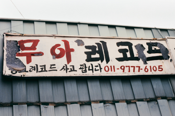
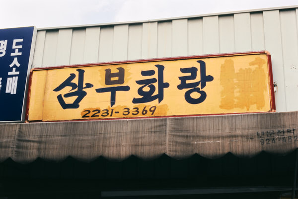
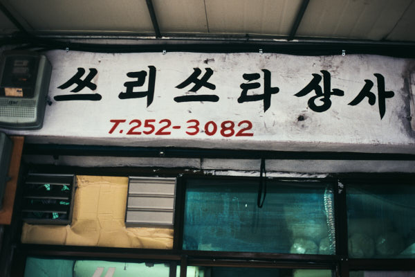
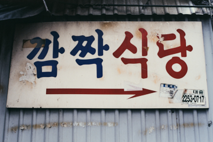
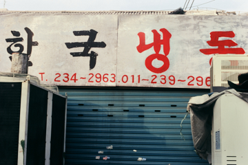
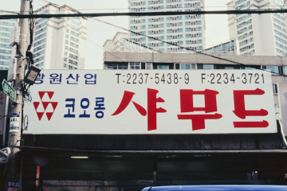
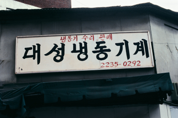
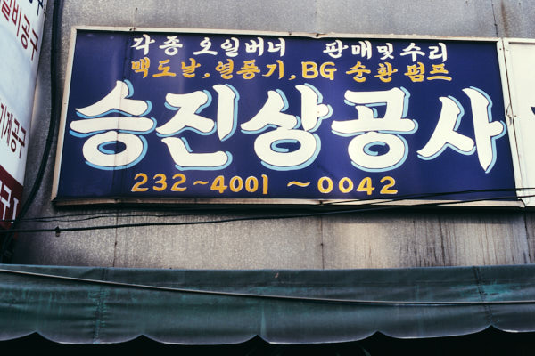
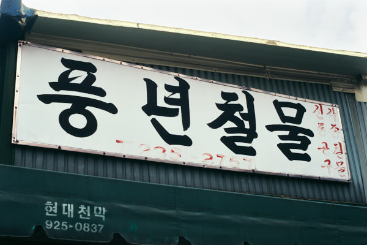
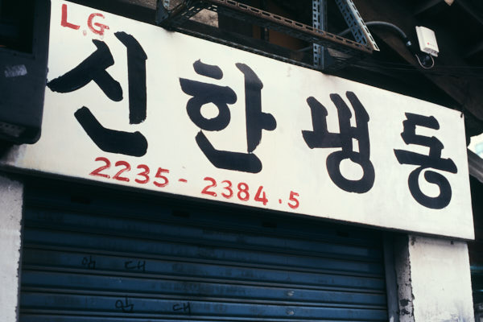
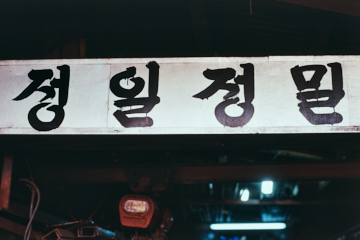
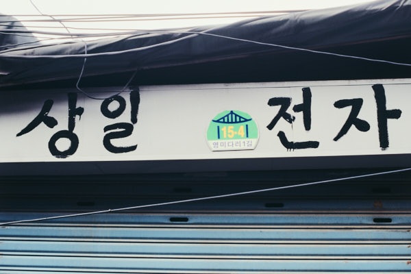
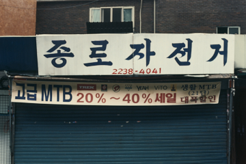
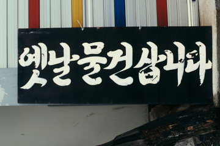
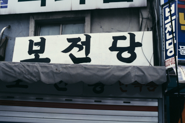
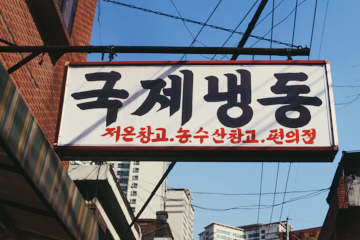
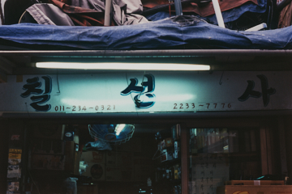
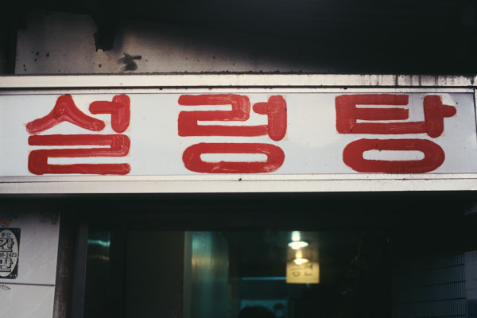
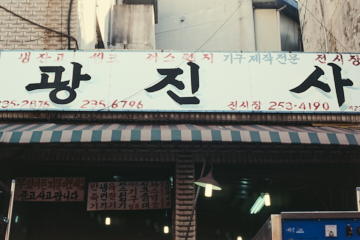
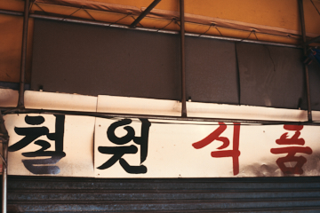
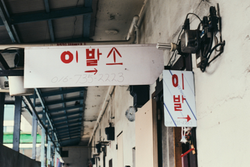
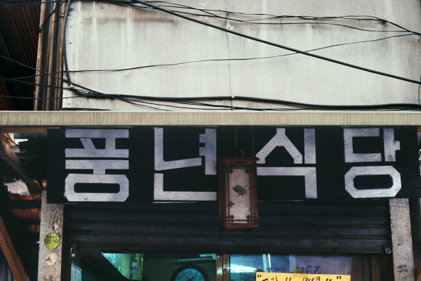
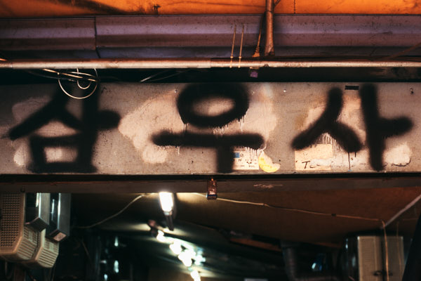
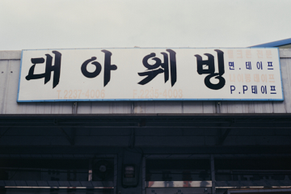
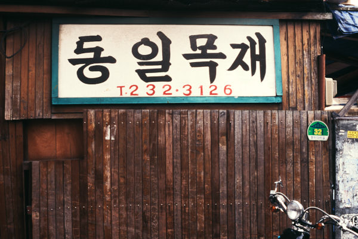
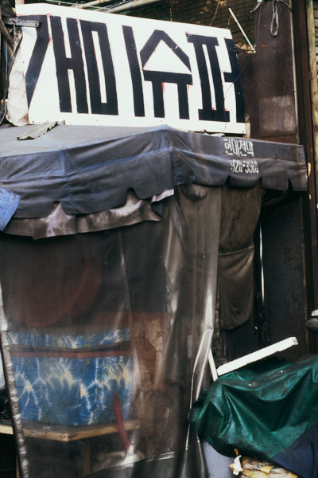
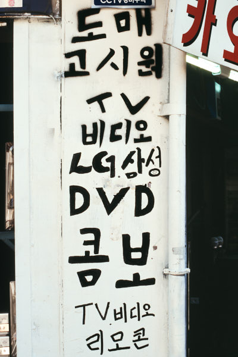
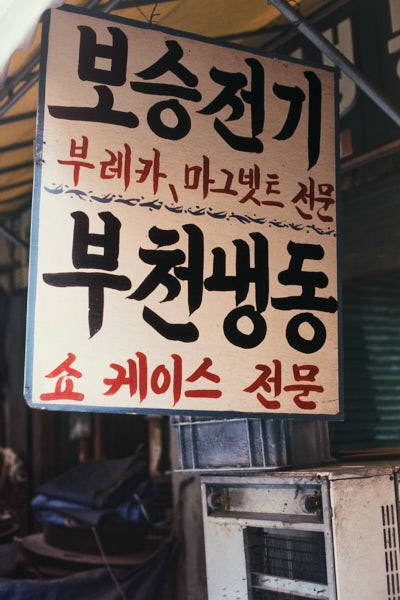
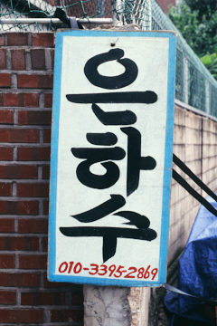
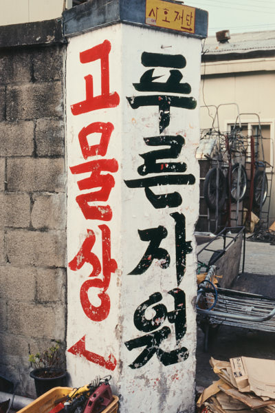
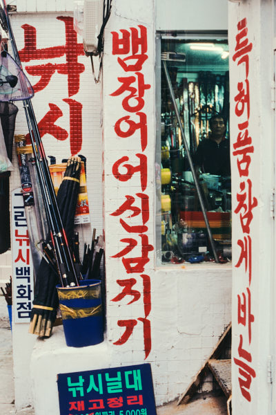
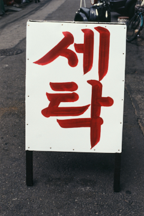
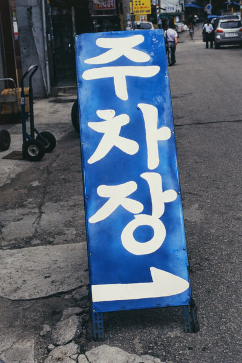
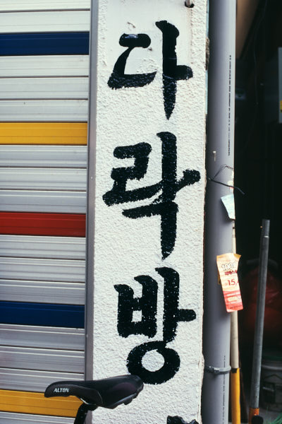
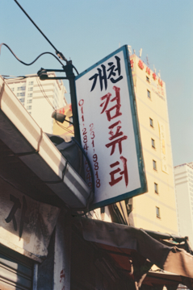
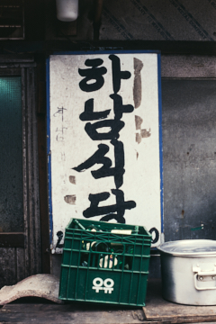
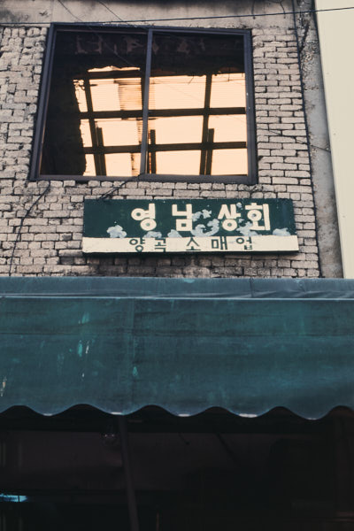
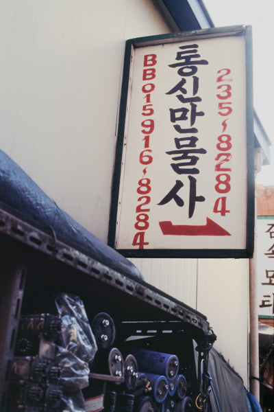
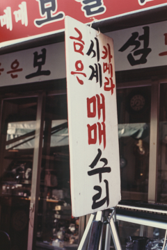
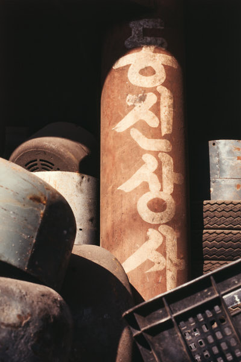
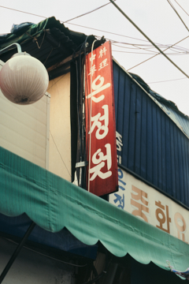
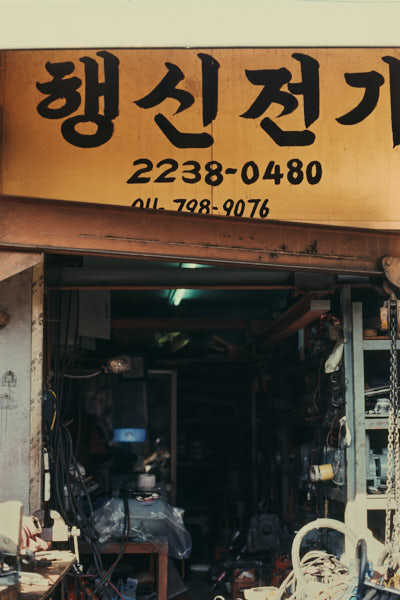
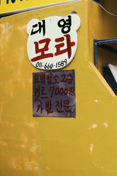
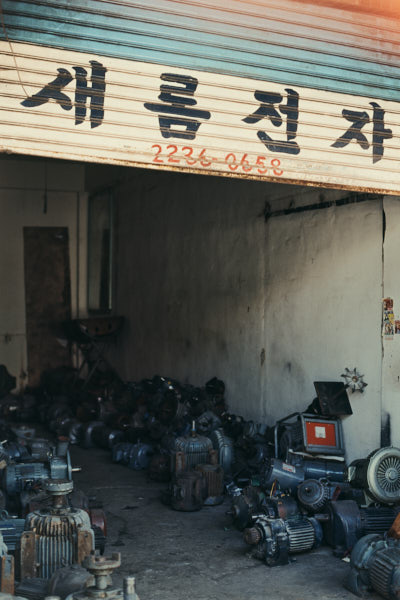
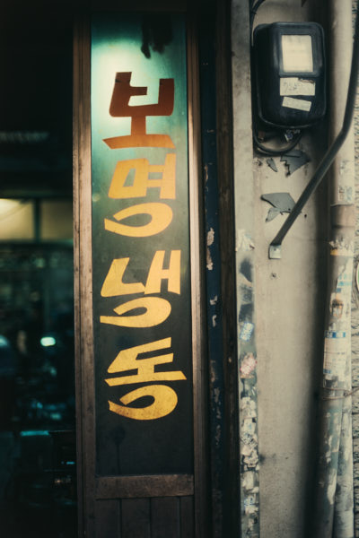
Old Signboards from the “Everything Market,” Collected by Young Lee
Park Young-Taek (Professor, Kyonggi University; Art Critic)
In 2007, Young Lee wandered through the shops around Cheonggyecheon and the “Everything Market” in Hwanghak-dong, photographing the signboards hanging above those stores. What drew his eye were names of shops written with brushes dipped in paint on galvanized sheets. Composed in painstaking, Gungche-style calligraphy, the Korean letters belonged to an earlier time and exuded a distinctly retro scent. These signboards—made purely of letters and condensed with the vigor of brushwork—fully reveal the allure of analog signage, hanging like plaques: Bojeondang, Three Star Trading, Ant Supermarket, Mua Records, Sambu Gallery, and so on.In these photographs, the signboard alone confronts us: only letters, standing bare. He effectively “collected” the city’s signboards, the letters written upon them. They are rare now, hard to find around us. Who still writes such letters with a brush today? The signboard that holds the trace of a human hand, the smell of labor, the practiced touch of someone seasoned—such signs have disappeared, just as hand-painted movie posters vanished almost overnight. The artisans who once wrote signboards by hand have gone; their signs have gone with them. Now the machine does the work.
And yet, around Cheonggyecheon, many older shops still hang their old signs. You will likely find such signboards in some worn neighborhood in the provinces as well. In any case, these are things on the brink of disappearance. Young Lee witnessed that death—absence—vanishing, and gathered the remains into photographs. A mourning for signboards!
Already in the 1930s, Bokjin Kim remarked on the meaning of the signboards that decorated Gyeongseong’s streets. He grasped the power of capitalism through them. In a commodity economy, the signboard is an inevitable instrument of publicity and a powerful image that dominates the city. Today, the city’s buildings are ruled by countless signboards. Signs densely occupy building facades, overwhelming everything; their dazzling, relentless letters press almost violently upon the gaze. They touch the fuse of desire, make one crave something, and at the same time assert their existence in a competitive clamor.
Lee looked closely at such signboards. Yet the ones he chose are decidedly retro—shabby signs wrought by hand, pushed out by the tide of efficiency, rationality, and mechanization, unable to survive any longer. Paradoxically, however, they provoke a peculiar, inexpressible feeling: a whiff of nostalgia, retrospective sentiment, and, suddenly, tender memories in tow. When I was young, most owners of sign shops in the neighborhood wrote Korean letterforms with panache—on galvanized sheets—using practiced, dexterous brushwork. Like painters of ink calligraphy; like itinerant folk painters; like those who painted barber’s signs.
In retrospect, signboards have their own history: from Chinese characters on wooden plaques, to painted galvanized sheets, and on to sleek digital signage—the transformations have been many. The signs that Lee shows thrust into our hands, in one stroke, a certain moment in the history of Korean signboards. In them lingers the afterglow of someone’s toil and touch we had forgotten, and of modest yet earnest shop names.
Working Notes
When a shop owner changes, the sign usually changes too. Or has the shop been run for a very long time? Contrary to expectation, could even the signboard itself be “secondhand”?The image of the Hwanghak-dong flea market owes much to signboards that look “from another time.” Signs written only in Korean—with black, red, and yellow—stir a kitschy sensibility and recall the feel of secondhand goods worn by hands. The signboard was functioning as a “type.”
With secondhand goods, use-value comes first. Fancy packaging loses its shine; value comes from sturdiness and clear utility. Sometimes, when memory becomes dearer than function, an object is reborn as an antique. The signboards here share qualities of both the secondhand and the antique. Their form—letters that can be painted over or erased at any time—together with old-fashioned typefaces and names reveal the identity of the flea market, whether the boards are actually old or merely overpainted to seem so.
From owners who have said their signs are “30–40 years old,” you can feel a hint of pride. Others respond offhandedly—as if forgetting their own shop sign—“Yeah, it’s been a long time.” For them, the sign is a well-used commodity and a precious piece of junk. In a place where everything you touch is secondhand or antique, the signboard is no different.
References
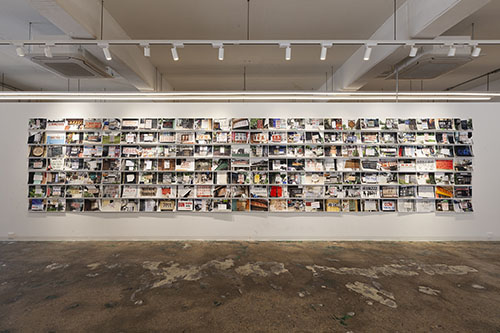
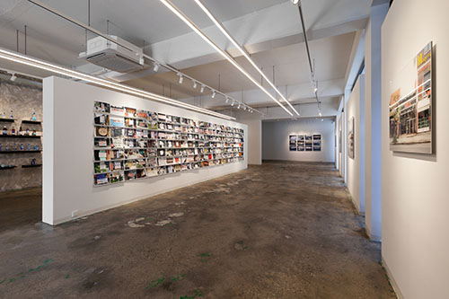
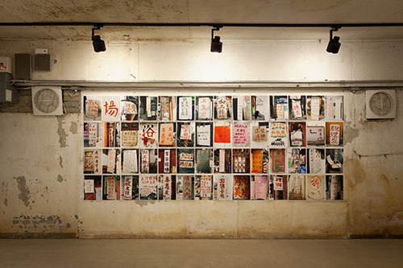
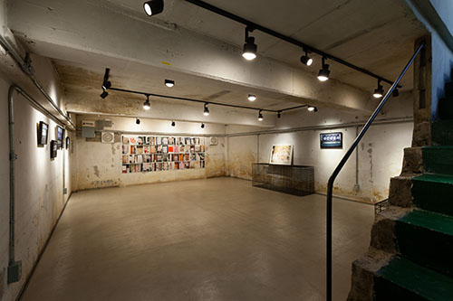
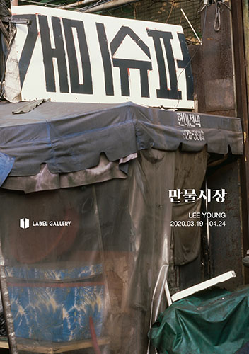
- 2020, “Everything Market,” Label Gallery, Seoul — Solo
- 2010 “ASYAFF2010 Special Exhibition: Plein Soleil,” Soojung Hall, Sungshin Women’s University, Seoul — Group
- 2008 “Everyday is not the same,” BizArt, Shanghai — Group
- 2007 “Parasitic Letters,” Gallery Lux, Seoul — Group
- 2007 “Hwanghak-dong — Everything Market,” Chungmu Art Hall, Seoul — Group
Exhibitions
- 2009 “Renmin-ro”
- 2009–10 “Peace & Unification”
- 2018 “Hoàn Kiếm”
- 2021 “Weißensee”
- 2021 “Looking at Label — Lee Young × Label Gallery”
- 2022 “Sarangkot”
- 2023 “Scales”
- 2024 “Looking at Label 2024”
- 2024 “Algodonales”
- 2025 “Dwelling for Plants 10 — Packed Space”